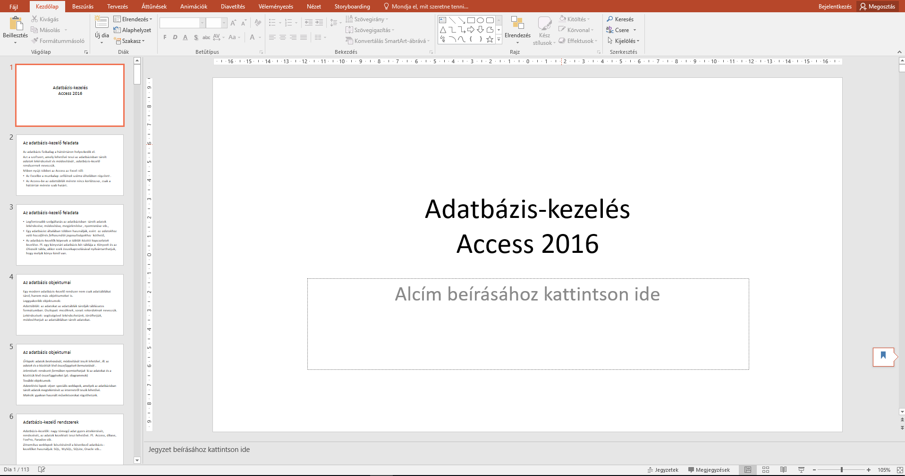

Adatbazis rendszerek
Ez a kurzus az adatbazis keszites alapjait tartalmazza.
Tematika
- Az adatbazis-kezelo feladata
- Az adatbazis objektumai
- Adatbazis-kezelo rendszerek
- Az adattablak kezelese
- Az adattablak kezelese, kulcs fogalma
- Rekordok felvitele, modositasa, torlese
- Adattabla megjelenitese, formazasa
- Statisztikai szamitasok a tablaban
- Kereses: automatikus, specialis szures urlap szerint
- Lekerdezesek:valaszto, torlo, frissito stb.
- Adattablak letrehozasa es osszekapcsolasa
- Tablak feltoltese
- Urlap keszites
- Jelentes keszitese